Product
-

PE Jaw Crusher
PE series jaw crusher is usually used as primary crusher in quarry production lines
-

PEW Jaw Crusher
PEW series Jaw crusher features big crushing ratio, reliable oper...
-

HJ Series Jaw Crusher
By analyzing customers' requirements and absorbing the world-class advanced technology....
-
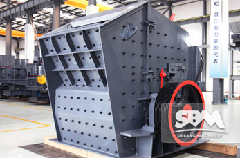
PFW Impact Crusher
It has been widely used in many industries, like construction......
-

PF Impact Crusher
It can be used to deal with materials whose size below 500...
-
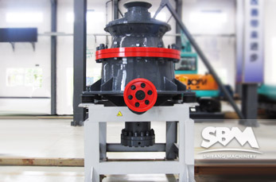
HCS Cone Crusher
HCS single cylinder cone crusher with hydraulic-driven system
-
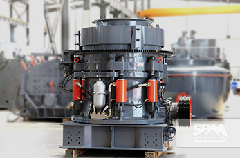
HPT Cone Crusher
HPT single cylinder cone crusher with hydraulic-driven system
-
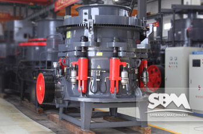
HPC Cone Crusher
It has excellent crushing efficiency,hydraulic control system
-

CS Cone Crusher
CS Series cone crusher is excellent in hard material crushing...
-
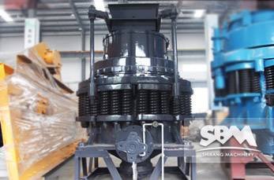
PY Cone Crusher
It has an excellent performance in secondary crushing...
-

VSI5X Crusher
PE series jaw crusher is usually used as primary crusher in quarry production lines
-
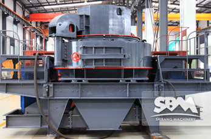
VSI Crusher
PE series jaw crusher is usually used as primary crusher in quarry production lines
-

Hammer Crusher
PE series jaw crusher is usually used as primary crusher in quarry production lines
-
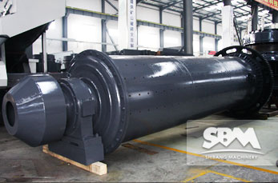
Ball Mill
Ball mills are used primary for single stage fine grinding,
-

LM Vertical Grinding Mills
It has application in metallurgy, construction, and mining...
-
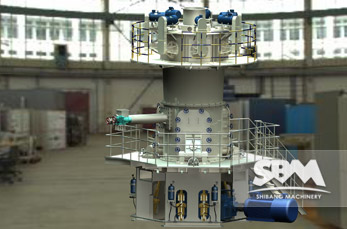
LUM Ultrafine Vertical Roller Mill
LUM Series Ultrafine Vertical Roller Mill adopts SBM abundant experience.....
-
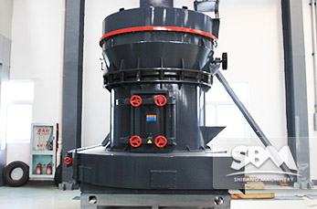
MTM Trapezium Grinder
MTM Medium Speed Trapezium grinder is a kind of leading-world
-
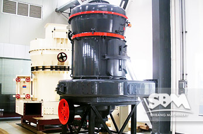
MTW Milling Machine
It takes the most advanced patent technology from European and the
-

Raymond Mill
Raymond grinding mill was ever popular in mining, building
-

SCM Ultrafine Mill
SCM series ultrafine mill is specially designed for super fine
-
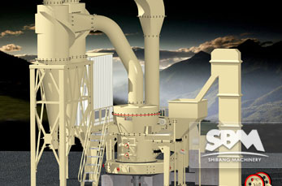
T130X Reinforced Ultrafine Mill
T130X reinforced ultrafine mill is a new facility designed by SBM
-
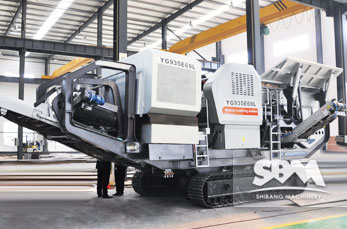
Hydraulic Driven
With tremendous flexibility and
-
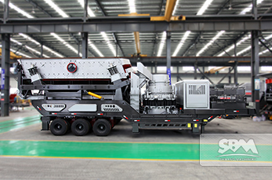
Mobile Cone Crusher
The Mobile Cone Crusher (plants) has excellent mobility.it can move
-
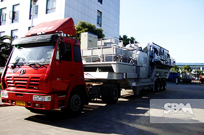
Mobile Impact Crusher
Mobile impact crusher offers maximum set-up flexibility, from
-
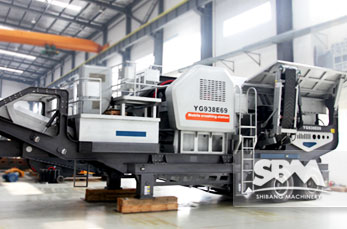
Mobile Jaw Crusher
Portable mobile jaw crusher is developed according to novel...
-

Flotation Machine
Flotation machine are mainly used in mineral ore dressing...
-

High-frequency Screen
High-frequency screen is a good choice for screening and grading...
-

Hydrocyclone
Hydrocyclone has wide application in metal ore and...
-

Magnetic Separation Machine
Magnetic separator is mainly used in wet separating of the ...
-

Spiral Classifier
spiral classifiers are designed to provide the most effective pool...
-

Belt Conveyor
SBM delivers the world's most comprehensive range of Heavy...
-
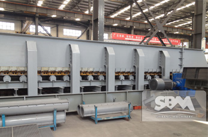
BWZ Heavy Duty Apron Feeder
BWZ series heavy duty apron feeder designed by SBM is one new ......
-

Vibrating Feeder
Vibrating Feeder is a kind of linear-direction feeding.
-
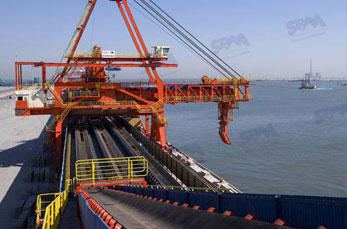
Wharf Belt Conveyor
SBM delivers the world's most comprehensive range of Heavy....
-
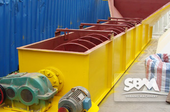
LSX Sand Washing Machine
It sets three functions—washing, dewatering, classifying...
-

Vibrating Screen
vibrating screen is a kind of sieving equipment of...
-
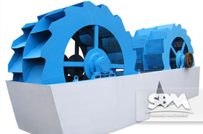
XSD Sand Washer
It meets their demands well both on capacity and on the clean...
-
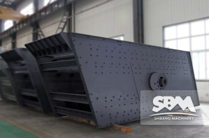
YKN Vibrating Screen
Depend on decades-years' experience in mining industry and latest technology......